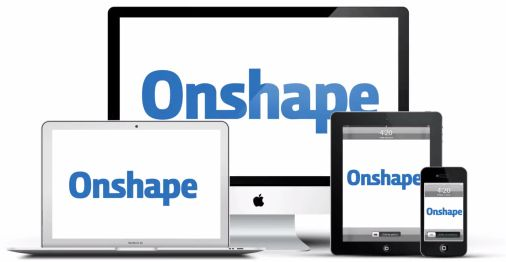
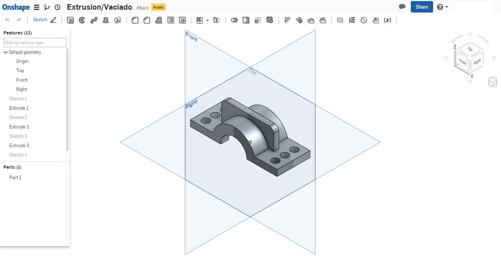
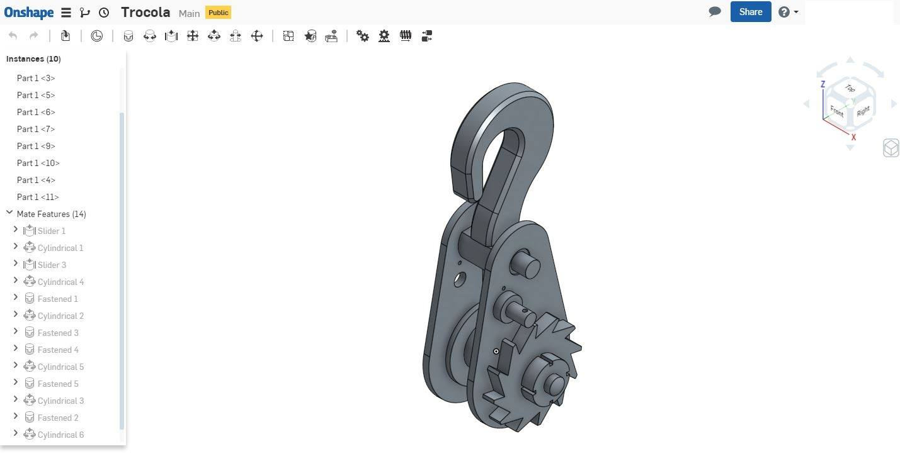
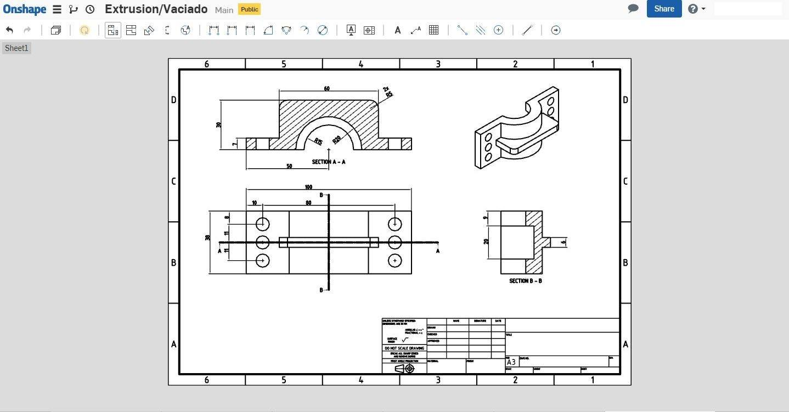

Este curso te permitirá modelar piezas en 3D, crear ensambles y generar los planos para documentar técnicamente un producto. El alumno se introducirá en los programas paramétricos con el concepto de diseñar un proceso y no un resultado.
Documentación Técnica de Producto
AR$ 1600
Duración: 8 clases (24hs / 3hs semanales) Presencial
Fechas

Dibujo Paramétrico
El diseñador construye su diseño a partir de relaciones, podemos generar variantes sin necesidad de rehacer la representación, la ventaja que tiene permite integrar la fabricación digital con máquinas CNC e Impresoras 3D.

Software Paramétrico
Creemos que la mejor forma de iniciar este camino es con ONSHAPE, con su plataforma libre para estudiantes, hobbistas y pequeñas empresas. Destacamos su innovador sistema de nube apto para cualquier sistema operativo y solo necesitando conexión a internet.

Modelado 3D
Generar piezas sólidas a partir de herramientas de extrusión, revolución, barrido y multisecciones. Comenzando con una forma ponderante que actuará como base para futuras modificaciones ya sea por adición o por sustracción.

Ensambles de Piezas
Después de modelar cada pieza llega el momento de armar el conjunto, definiendo relaciones geométricas a partir de sus caras, vértices o aristas.

Planos de Fabricación
Por último aprenderemos a realizar los planos, teniendo en cuenta las Normas IRAM de Dibujo Técnico, representación Monge, para producir la representación plana de un objeto de modo que pueda definirse con precisión la distribución y dimensiones de sus elementos constitutivos.

Vamos a usar
- Onshape
- Manual de Normas I.R.A.M. (PDF)
- Chrome, Firefox, otro...
Perfil del módulo
Hoy en día es imprescindible tener conocimientos básicos dentro del mundo industrial en modelado 3D con software paramétrico. Obtendrás las nociones básicas con la que se maneja tanto Onshape como Catia, SolidEdge, SolidWorks, Inventor
Objetivos
- Conocer las herramientas de un programa paramétrico para poder llevar a cabo cualquier diseño ya sea a nivel Universitario o dentro de una Oficina Técnica
Temario
- Modelado 3D piezas solidas
- Creación de bocetos con restricciones
- Extrusión | Revolución | Barrido | Multisección (adición/sustracción)
- Agujeros | Filetes | Chaflán | Dar espesor | Ángulo de desmoldeo
- Espejar |Patrón lineal | Patrón circular
- Ensamble de piezas formando un conjunto
- Manipular manualmente en 3 Dimensiones
- Vínculo de 2 partes sin libertades
- Vínculo que permite solo rotación o translación alrededor del eje Z
- Vínculo que permite solo traslación a lo largo del eje X y el eje Y
- Planos de fabricación
- Elección de tipo de hoja (ISO-ANSI)
- Proyección de vistas | Cortes | Acotación
- Tabla de materiales
Régimen de asistencia, calificación y promoción
Para la aprobación y certificación del curso se debe cumplir con el 80% de asistencia y la entrega de la totalidad de los Trabajos Prácticos a través de un porfolio, en soporte digital.

Documentación Técnica de Producto
Diploma de aprobación certificado por UTN-INSPT según disposición Nro. (En trámite)
+ certificado propio

Docente a cargo
D.T. Manuel Djeredjian ver+
Soy Diseñador Tecnológico recibido del INSPT-UTN. Me enfoque en capacitarme en diferentes programas de Diseño Paramétrico como SOLID EDGE, CATIA, ONSHAPE entre otros. Mis conocimientos en el modelado en 3D y en edición de imágenes me permiten expresar mis
Coordinador académico: Prof. D.I. Victor Peterle
8 clases (24hs / 3 hs semanales)
Presencial (min: 5 / max: 15 alumnos)
Inicio a confirmar - Los Miércoles de 19 a 22 hs
AR$ 1600
inscribirme Contactarme
Forma de pago: En efectivo, en la institución (Lunes a Viernes de 7.30 a 13 y de 14 a 15.30hs), o bien mediante transferencia bancaria.
Si ya sos alumno consúltanos por beneficios.